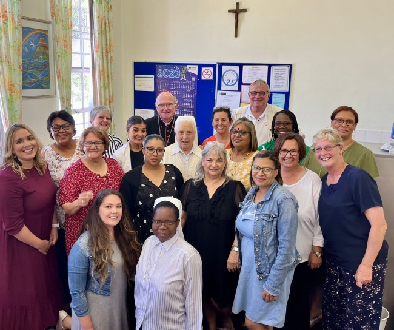

About Our School
Holy Cross Convent Primary School provides standard primary learning from Pre-Grade R to Grade 7. Our core pillars focus deeply on faith sharing, academic education, and community outreach.
Holy Cross Convent Primary School has been a proud part of the Brooklyn community in Cape Town for many years, helping generations of children get a great start in life. Today, under the leadership of our principal, Mrs. Du Plessis, our school focuses on giving children a well-rounded education that prepares them for the future while keeping our traditional values alive.
Everything we do is guided by three simple promises:
- Values and Character: We teach children kindness, honesty, and respect for one another, helping them grow into good people who care about the world around them.
- Great Learning: We follow the Western Cape Education Department standard closely, focusing on strong reading, writing, math, and computer skills.
- Helping Others: We encourage our students to think about those in need by getting involved in local charity drives, community projects, and neighborhood cleanups.
Our Dedicated Staff
